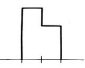
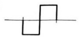

- Force
- Torque
- Linear Momentum
- Angular Momentum
(d) The product of moment of inertia and angular velocity gives angular momentum.
- 0.022 J
- 0.044 J
- 0.011 J
- 0.033 J
(a) At the mean point, the potential energy of the pendulum bob is zero. Thus, all its energy is in the form of kinetic energy. Using the formula for the period of a simple pendulum, T = 2π√(l/g), where l is the length of the pendulum and g is the acceleration due to gravity, we can find that the length of the pendulum is l = (T/2π)^2*g = 0.39m. Using the amplitude, we can find that the maximum velocity of the pendulum is v = √(2gA) = 0.77m/s. Therefore, the kinetic energy of the pendulum bob at its mean point is KE = (1/2)mv^2 = 0.022J.
- The flow of magma
- The expansion of the earth’s crust
- The rubbing together of earth’s plates
- Tsunami
(c) Earthquakes are caused by the rubbing together of earth's plates. When the plates move past each other, they can get stuck, causing a buildup of stress. Eventually, the stress becomes too great and the plates suddenly slip, releasing energy in the form of seismic waves, which cause the ground to shake and vibrate.
- 1%
- 6%
- 10%
- 20%
(c) After 4 half-lives, 10% of the original radioactive atoms are left.
- Isothermal
- Isobaric
- Adiabatic
- Isochoric
(c) In an adiabatic process, no heat is exchanged with the surroundings, and therefore, all the work done is used to change the internal energy of the gas. Hence, in an adiabatic process, the work done is maximum.
- 2%
- 3%
- 4%
- 5%
(d) The percentage change in the temperature of inversion when the temperature of the cold junction is equal to 20°C is 5%.
- 
- 


- Amplitude
- Frequency
- Wavelength
- Intensity
(c) The wavelength of sound is affected by the change in air temperature, as the speed of sound changes with temperature, and wavelength is directly proportional to the speed of sound.
- Volume only
- Pressure only
- Temperature only
- Both pressure and volume
(d) The internal energy of an ideal gas depends on both pressure and volume. According to the first law of thermodynamics, the change in internal energy is equal to the heat added to the system minus the work done by the system. Both heat and work depend on pressure and volume.
- a circuit having inductor and resistor in series
- pure resistive circuit
- pure inductive circuit
- pure capacitive circuit
(b) In a pure resistive circuit, the maximum power dissipation is observed as all the energy is converted into heat by the resistance. In other circuits, some energy is stored in the inductor or capacitor and returned back to the source in each cycle, resulting in lower power dissipation.
- to reduce hysteresis loss
- to reduce eddy current
- to reduce the magnetic effect
- to increase coercivity
(b) Laminated cores are used in transformers to reduce eddy current losses. Eddy currents are induced in the core material due to the changing magnetic field, which can result in significant energy losses and heating of the core. The laminations are made of thin insulated sheets, which reduce the eddy currents by increasing the resistance to the flow of current in the core material.